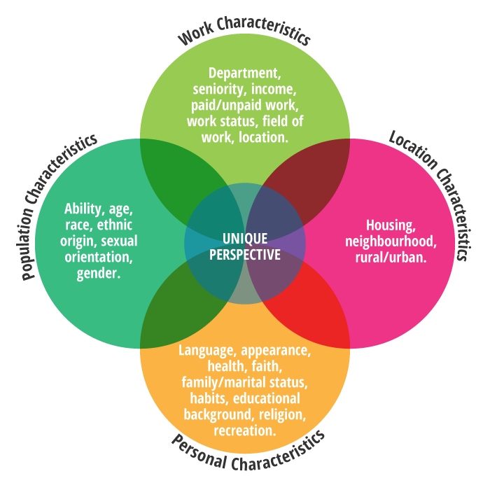

Diversity, Identity and Perspectives
What is diversity? What does it mean for organizations to be diverse? Why should organizations want to be inclusive of diversity in their workforce? These questions have been an increasingly important part of business strategy in the past two decades.
This submodule explores:
- The meaning of diversity.
- How organizations approach their diversity through inclusion strategies.
- The systemic issues associated with diversity and inclusion.
Begin by expanding your understanding of each of the concepts below.
What defines your identity?
Regardless of the workplace, every worker has a different identity and story. Everyone’s backgrounds are diverse, meaning we have led different lives and had a variety of life experiences. We understand our own identity in the context of our life experiences, and we understand others in relation to our identity. How we perceive ourselves and others can affect how we interact with one another. Our identity shapes how we treat others and how others treat us, and gives each person a unique perspective.
As shown in the graphic below, our identity/perspective is shaped by many different factors including our place of birth, race, gender, sexual orientation, socio-economic position, age, and physical ability (University of Oregon, 1999). Our perspective is also shaped by additional characteristics like our beliefs, values, interests, level of education, and cognitive ability. We may share some characteristics with others and still have different experiences. For example, two young men from the same village may share gender and ethnic characteristics, but could have very different identities if one is physically disabled or from a more privileged socio-economic position.
Image Source:
Region of Waterloo. (n.d.). Diversity & Inclusion. Retrieved March 14, 2016, from http://www.regionofwaterloo.ca/en/regionalGovernment/Diversity.asp.
Reflective Questions
- What key factors have shaped your identity?
The Concept of Diversity
Each of us comes from a different background and collectively form a group of workers in the workplace that is diverse; however, diversity is a much more profound concept than this.
Diversity is interpreted and acted upon differently depending on the person and organization. Generally, it means appreciating and respecting the characteristics that make individuals unique and fostering an inclusive environment where all individuals feel supported to develop and contribute. Consider this definition of diversity developed to support a positive culture at the University of Oregon :
Definition of Diversity
The concept of diversity encompasses acceptance and respect. It means understanding that each individual is unique, and recognizing our individual differences. These can be along the dimensions of race, ethnicity, gender, sexual orientation, socio-economic status, age, physical abilities, religious beliefs, political beliefs, or other ideologies. It is the exploration of these differences in a safe, positive, and nurturing environment. It is about understanding each other and moving beyond simple tolerance to embracing and celebrating the rich dimensions of diversity contained within each individual.
(University of Oregon, 1999)
Reflective Questions
- In which ways does diversity move beyond merely recognizing and tolerating differences between individuals?
- What advantages does embracing diversity give to teams in the business world?
References:
Summer Diversity Internships and Objectives/University of Oregon (1999, Aug. 8). Definition of Diversity. Retrieved March 21, 2016, from http://gladstone.uoregon.edu/~asuomca/diversityinit/definition.html.
Region of Waterloo. (n.d.). Diversity & Inclusion. Retrieved March 14, 2016, from http://www.regionofwaterloo.ca/en/regionalGovernment/Diversity.asp.